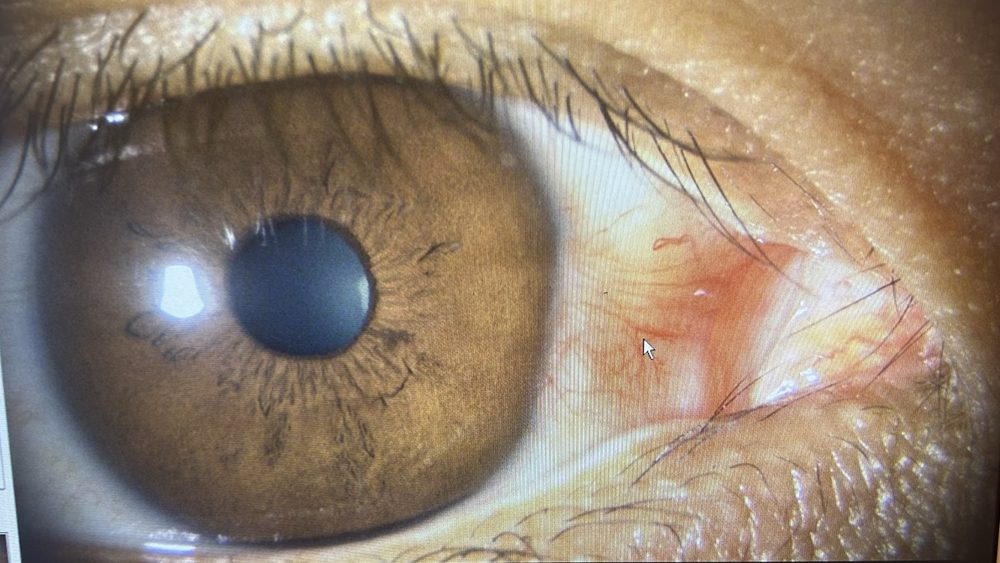
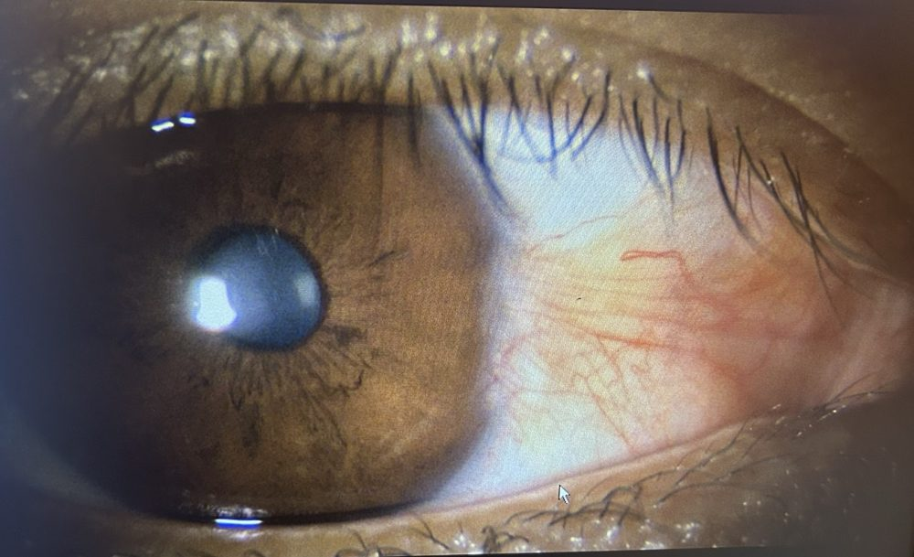
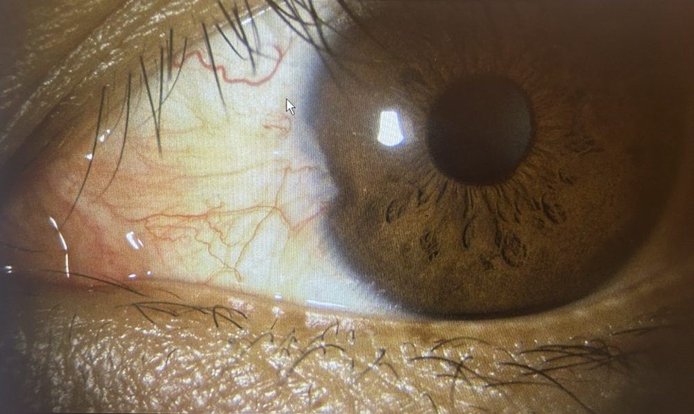
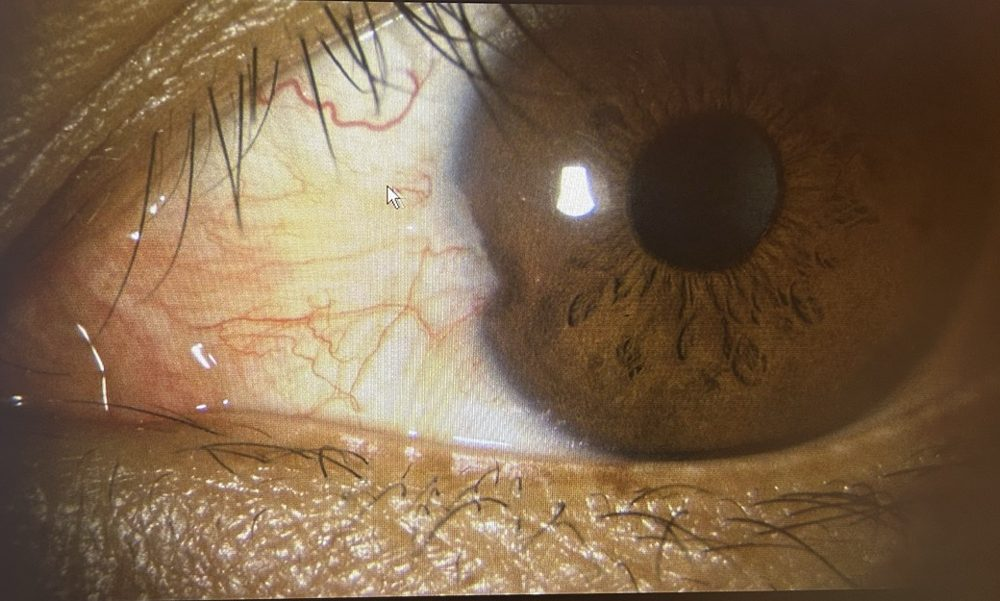
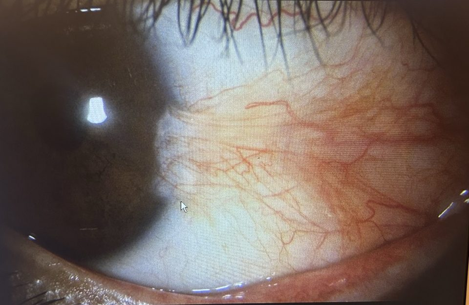
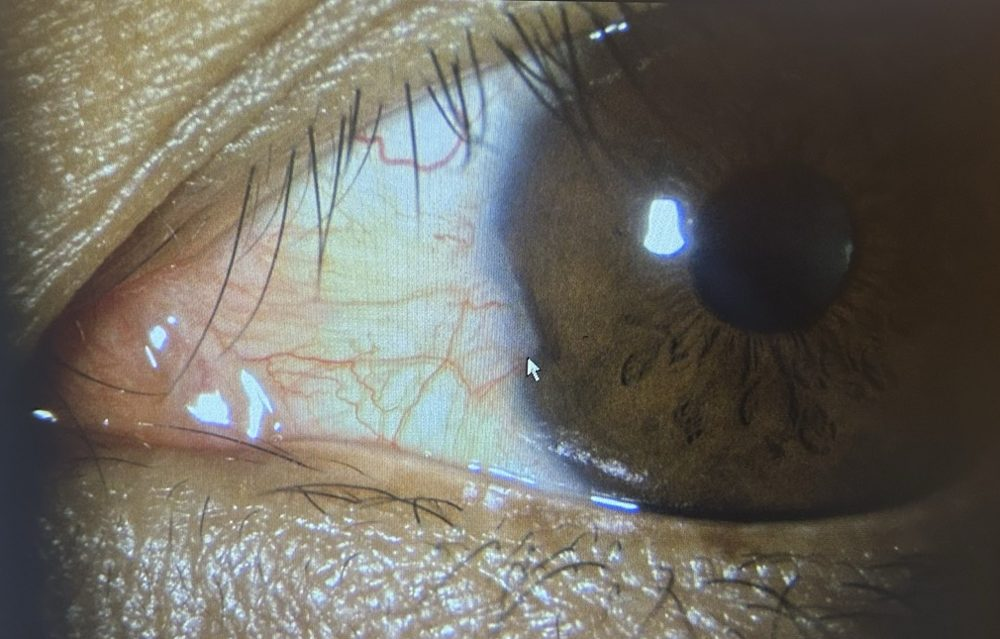
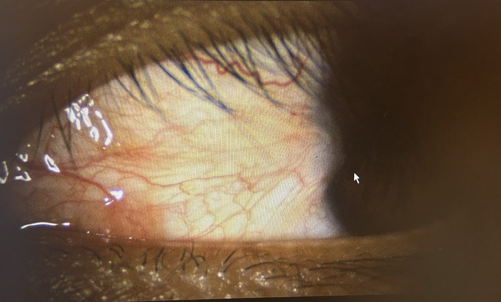

Health / Eye
Pterygium（翼状片）
白目の結膜が黒目（角膜）に三角形に入り込む良性の病気。自分の状態・受診履歴・手術判断の材料をまとめる。
Nature
良性
がんではない。命・失明に直結しない
Main cause
紫外線
屋外活動・乾燥・ホコリが加速要因
Recurrence
〜10%
結膜自家移植の場合の目安。単純切除だと大幅に上がる
Key takeaways
- 放置しても多くはゆっくり進むだけ。ただし瞳孔側に伸びると乱視が増え、瞳孔にかかると視力が落ちる。
- 手術のタイミング：乱視が増えてきた／見た目が気になる／充血・異物感が続く／瞳孔に近づいてきた、のどれか。小さいうちに取る方が角膜の傷も小さい。
- 術式が再発率を決める：「切って終わり（単純切除）」ではなく、結膜自家移植（弁の移植）を併用する術式を選ぶ。保険適用・日帰り。
- 術後の紫外線対策が再発防止の要。サングラス（UVカット＋横からの光も防ぐ形）を常用。
- bucket listにある「翼状片手術」の判断材料＝①乱視の推移 ②先端と瞳孔の距離 ③見た目のストレス。
Next actions
- 次回受診時も同じ構図（正面・鼻側アップ）でモニター写真を撮る→進行比較用
- 次回受診時に聞く：左右・部位の確定（写真では両眼の鼻側）／何mm侵入しているか／乱視度数 → My Caseに記入
- 手術を勧められたら：術式（結膜自家移植か）・MMC等の併用・再発率・費用・術後の通院回数を確認（Q&A参照）
- 屋外（ゴルフ・旅行・海）ではUVカットサングラスを常用
Profile
| 項目 | 内容 |
|---|
| かかりつけ | 飯田橋眼科クリニック（医療法人社団慶翔会）／03-5276-2722／Web予約=Bee診察予約 |
| 左右・部位 | 両眼・鼻側（目頭側）（眼科モニター写真からの推定。医師に確認） |
| 進行度（Grade） | 写真上は先端が黒目の縁（角膜輪部）付近＝初期（Grade 1相当）に見える。瞳孔まではまだ距離がある。正式な侵入mmは未記入 |
| 経過 | 2025-10-29 → 2026-04-15 の同構図写真で、見た目の範囲に大きな変化はない印象（素人目） |
| 乱視 | 未記入（検査時の度数を時系列で残す） |
| 症状 | 未記入（充血・異物感・ゴロゴロ・見た目） |
| 処方 | 未記入（点眼薬名） |
| 方針 | 手術を検討中（bucket listに「翼状片手術」） |
Visit log
| 日付 | 場所 | 内容 |
|---|
| 2025-09-17 | 飯田橋眼科 | 受診目的・所見を追記 |
| 2025-10-29 | 眼科（飯田橋眼科と推定） | 細隙灯で前眼部撮影（両眼・鼻側）。モニターを撮影した写真あり |
| 2026-04-14 | 飯田橋眼科 | 受診目的・所見を追記 |
| 2026-04-15 | 飯田橋眼科 | 前眼部撮影（17:08、両眼・鼻側）。前回と同構図の写真あり。医師のコメントを追記 |
Source予約日はGmail（個人）の予約完了メール、撮影日は写真のEXIF。2025-09-17と2026-04-14の受診理由は記録なし。2025-10-29は予約メールがなく、写真のみ。
Before / After（同じ構図で比較）
右眼（推定）正面

2025-10-29

2026-04-15
左眼（推定）鼻側

2025-10-29

2026-04-15
Read次回受診時も同じ構図（正面・鼻側アップ）でモニターを撮っておくと、進行の有無を比較できる。
All photos
2025-10-29 · 右眼（推定）正面目頭側に赤い肉厚の隆起と血管の束。先端は黒目の縁付近

2025-10-29 · 右眼（推定）鼻側アップ血管が黒目の縁に向かって扇状に集まる＝翼状片の典型形

2025-10-29 · 左眼（推定）鼻側左眼も鼻側に同様の血管の集まり。先端は輪部にかかる程度
2025-10-29 · 左眼（推定）鼻側8006の別カット
2026-04-15 · 右眼（推定）正面2025-10と同じ構図。範囲は大きく変わっていない印象

2026-04-15 · 左眼（推定）鼻側アップ白目の血管が黒目の縁へ集まる
2026-04-15 · 左眼（推定）鼻側2025-10の8007とほぼ同じ構図＝比較用
Note眼科の細隙灯写真をモニター越しに撮影し、目の部分だけトリミング。所見メモは素人目の記述で医師の診断ではない。左右は目頭の位置からの推定。
What it is
白目の組織が黒目に「翼」の形で伸びてくる
結膜（白目を覆う膜）の下の線維血管組織が増殖し、角膜（黒目）の表面に三角形に入り込む。形が鳥の翼に似ていることから「翼状片」。英語は pterygium（ギリシャ語 pteryx＝翼）。
9割以上が鼻側（目頭側）に出る。鼻の側面で反射した紫外線が目頭側の角膜縁に集中するため（Coroneoの「周辺光集光」説）。
先端（head）が瞳孔に近づくほど乱視・視力低下が起きやすい
Risk factors
- 紫外線（最大要因）：屋外時間が長い・低緯度・海や雪の照り返し
- 乾燥・風・ホコリ・砂
- 男性・30〜50代以降で多い
- 家族歴（体質的な素因もあるとされる）
Symptoms
- 目頭の充血、ゴロゴロ・異物感、乾き
- 見た目（白目の一部が盛り上がって赤い）
- 進行すると角膜が引っ張られ倒乱視が増える
- 瞳孔にかかると視力低下
Grading（臨床でよく使う目安）
| 段階 | 先端の位置 | 影響 | 対応の目安 |
|---|
| Grade 1 | 角膜輪部（黒目の縁）を越えたばかり | ほぼ無症状 | 経過観察・UV対策 |
| Grade 2 | 輪部と瞳孔縁の中間あたりまで | 乱視が出始める | 症状・見た目次第で手術検討 |
| Grade 3 | 瞳孔縁に達する／越える | 乱視増大・視力低下 | 手術推奨 |
Note分類法は複数ある（侵入長mm・厚み/血管の見え方による活動性分類など）。担当医がどの物差しで見ているかを聞くとよい。
Similar conditions
- 瞼裂斑（pinguecula）：白目の黄色っぽい盛り上がり。角膜には入り込まない。翼状片の前段階・兄弟分とされ、原因（紫外線）も同じ。
- 偽翼状片：外傷・やけど・炎症の後にできる癒着。部位を選ばない。
- 結膜腫瘍（OSSN等）：まれだが見た目が似ることがある。急に大きくなる・形が不整なら病理検査。
Non-surgical
点眼（人工涙液・抗炎症薬）で充血や異物感は和らぐが、翼状片自体は消えない・縮まない。根治は手術のみ。
Surgical options
| 術式 | 内容 | 再発率の目安 | コメント |
|---|
| 単純切除（bare sclera） | 切り取って白目をむき出しのまま治す | 高い（約20〜40%以上） | 現在は単独では非推奨 |
| 結膜自家移植（conjunctival autograft） | 切除後、上方の健康な結膜を薄く切り取り移植 | 約2〜13% | 現在の標準。保険の「弁の移植を要するもの」 |
| MMC併用 | マイトマイシンC（抗がん剤）を術中に少量塗布し増殖を抑える | 低い | 再発例・若年で使われることが多い。強膜が薄くなる等の副作用に注意 |
| 羊膜移植 | 結膜の代わりに羊膜を貼る | 自家移植よりやや高め | 大きい・再発例・緑内障手術の予定がある場合など |
| フィブリン糊固定 | 移植片を縫わずに生体糊で固定 | 同等 | 術後の痛み・異物感が少ない、手術時間が短い |
Pointメタ解析では単純切除の再発オッズは結膜自家移植の約6倍。若い・男性・活動性が高い（赤く厚い）ほど再発しやすい。
Flow
- 術前検査（視力・乱視・角膜形状）
- 手術：点眼＋局所麻酔、片眼30〜60分・日帰り
- 当日は眼帯。翌日・1週・1か月・3か月…と通院
- 点眼（抗菌・ステロイド）を数週〜数か月
- 再発は術後半年〜1年以内が多い
After surgery
- 1〜2週間はゴロゴロ・充血・痛み（移植部）
- 洗顔・洗髪は数日〜1週間制限、プール・サウナは数週間NG（医師の指示に従う）
- デスクワークは数日で可、運動は1〜2週後から
- 充血が完全に引くのは1〜3か月
- 乱視が減り、眼鏡/コンタクトの度数が変わることがある
Best option（お金をかけるなら）
結論：国内なら「角膜専門医 × 結膜自家移植（広め・輪部含む）」、世界最高峰は豪州の P.E.R.F.E.C.T.
自分は「若い男性」＝再発しやすい群（50歳未満・男性は再発率が高い）。なので費用より術式と執刀医にこだわる価値がある。
| 選択肢 | 中身 | 再発率 | 費用感 | 向き・不向き |
|---|
| 1国内・大学病院／眼科専門病院の角膜専門医 | 広めに切除＋上方結膜の自家移植（輪部幹細胞を含める）。必要に応じてMMC・フィブリン糊固定 | 数% | 保険適用。3割で約3万円（片眼・当日分込みの目安） | 最も現実的な最適解。通院もしやすい |
| 2豪州 Hirst教授の P.E.R.F.E.C.T. | 翼状片の組織を大きく取り除き、広範囲の結膜自家移植で覆う。MMC等の補助薬を使わない | 0.1%（1,000例） | 自費＋渡航・滞在費。料金は非公開→要問い合わせ | 再発ゼロを最優先するなら。手術時間が長く（球後麻酔＋助手が必要）、術後通院のため数週間の滞在が必要 |
Point日本では翼状片手術は保険診療が基本で、お金を積んでも術式自体はほぼ変わらない。お金をかける意味があるのは「執刀医の指名（大学病院の角膜外来・紹介状あり）」「個室入院で両眼を計画的に」「海外のPERFECT」の3つ。PERFECTの再発率データは開発者本人の報告が中心で、独立した検証は少ない点に注意。
Cost
保険適用（K224 翼状片手術（弁の移植を要するもの））。3割負担・片眼・日帰りで当日分込み約3万円が目安（術前検査・薬剤・再診料で変わる）。正確な額はクリニックで確認。
民間の医療保険・生命保険の手術給付金対象になることが多いので、加入中の保険を確認。
How to choose
- 角膜専門医がいて、翼状片を全例で結膜移植している施設（「切除のみ」の所は避ける）
- 再発率・年間件数を聞いて即答できるか
- 大学病院は紹介状が必要（なしだと選定療養費 7,000円〜）。飯田橋眼科に「角膜外来に紹介して」と頼むのが早い
Candidates（都内・角膜に強い所）
| 施設 | 場所 | 特徴 | アクセス |
|---|
| 東京歯科大学水道橋病院 眼科 | 千代田区神田三崎町 | 角膜・眼表面で国内トップクラスの東京歯科大学系（本拠は市川総合病院 角膜センター） | 神保町・飯田橋から近い。第一候補 |
| 井上眼科病院 | 千代田区神田駿河台（御茶ノ水） | 眼科専門の大病院。手術件数が多い | 御茶ノ水 |
| 順天堂医院 眼科 | 文京区本郷（御茶ノ水） | 大学病院。角膜外来あり | 御茶ノ水 |
| 慶應義塾大学病院 眼科 | 新宿区信濃町 | 角膜・ドライアイ研究の拠点の一つ | 信濃町 |
| 東京大学医学部附属病院 眼科 | 文京区本郷 | 角膜外来あり | 本郷三丁目 |
| さわだ眼科クリニック | 板橋区 | 遊離結膜弁移植で初回再発率5%未満と明記。日帰り | クリニックで早く受けたい場合 |
| （参考）東京歯科大学市川総合病院 角膜センター | 千葉県市川市 | 角膜治療の国内拠点。難症例・再発例向け | 都外だが総武線で近い |
Note各施設の担当医・初診の受け方（紹介状要否・予約）は受診前に公式サイトで確認。「名医」ランキングの類は根拠が弱いので、角膜専門医かどうか＋結膜移植の有無で判断する。
UV protection
- UVカット率99%以上（UV400）のサングラス。色の濃さとUVカットは無関係（濃いだけだと瞳孔が開いて逆効果）。
- 横からの光が鼻側に集まるので、顔に沿うラップアラウンド型やフレームが大きめのものが有利。
- つばのある帽子で上からの光を減らす（目に届く紫外線を約半分に）。
- UVカット付きのメガネ・コンタクトでも、コンタクトは白目を覆わないので不十分。
- 要注意シーン：ゴルフ・海・雪山・旅行（低緯度）・ランニング
Dryness
- エアコン・飛行機内では人工涙液
- PC作業時はまばたきを意識、加湿
- 風・砂の多い場所では保護メガネ
Watch signs
- 見え方がぼやける・乱視が増えた
- 急に大きくなった・色や形がいつもと違う
- 強い痛み・充血が続く
Actionいずれかがあれば予約を前倒しして受診。
放っておくとどうなる？
多くは数年単位でゆっくり進むか、途中で止まる。瞳孔にかかるまで伸びると視力が落ち、手術後も角膜に濁りが残りやすい。「大きくなる前に取る」方が結果はきれい。
いつ手術すべき？
①乱視が増えてきた ②先端が瞳孔に近づいてきた ③充血・異物感が続く ④見た目がストレス、のいずれか。急ぐ病気ではないので、仕事の繁忙期や屋外イベントを避けて日程を組めばよい。
再発したらどうなる？
再手術は可能だが、再発した翼状片は初回より勢いが強く、癒着もしやすい。だから初回に再発率の低い術式を選ぶのが大事。
両目同時にやれる？
通常は片眼ずつ。術後しばらく見えにくい・眼帯をするため、もう片方の目で生活できるようにする。
手術前に医師に聞くことリスト
- 私の翼状片はどのGradeか、何mm侵入しているか
- 術式は結膜自家移植か？ MMCや羊膜は使うか？ 縫合か糊か？
- 先生の症例での再発率は？
- 術後の通院回数・期間、仕事・運動・飲酒・入浴の制限
- 費用（総額目安）と診断書の取り扱い（保険請求用）
- 自分は若い男性で再発しやすい群だが、移植範囲やMMCなど再発対策をどこまでやるか
- 術後に乱視がどれくらい減る見込みか（眼鏡の作り直しのタイミング）
レーシック・ICL・白内障手術との関係は？
翼状片があると角膜の形が歪むため、屈折矯正や白内障手術の度数計算がずれる。将来これらを受ける可能性があるなら、翼状片を先に治してから数か月おいて計測するのが一般的。
Last updated: 2026-10-15